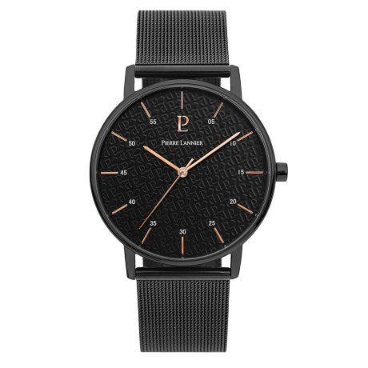

Modèle tendance
Montre homme 203F438 acier noir

4/5
Envie de faire des longueurs ?
Pourvue d’un verre minéral, la montre homme 203F438 acier noir est étanche 5 ATM, soit l’équivalent de la résistance à la pression exercée par l’eau à 50 mètres de profondeur. Toutes les montres Pierre Lannier marquées "WATER-RESISTANT 50 mètres" vous permettent de vous doucher, de vous baigner, de nager avec plongeons, en mer ou à la piscine sans risque d'être endommager.